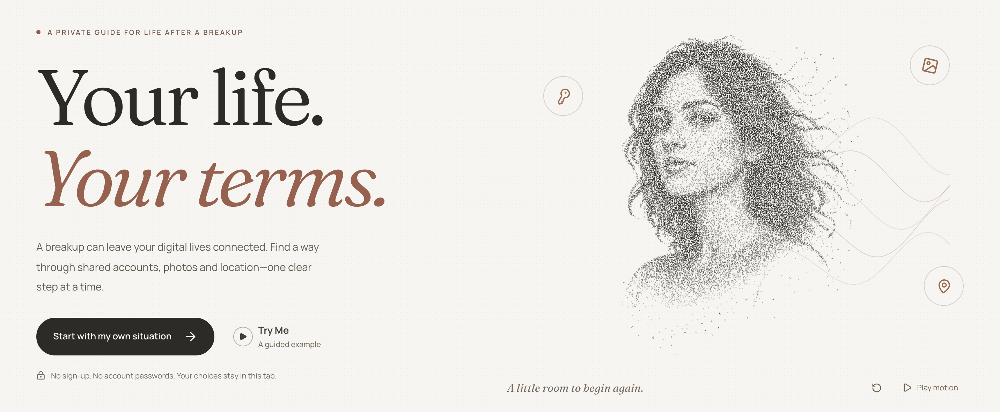
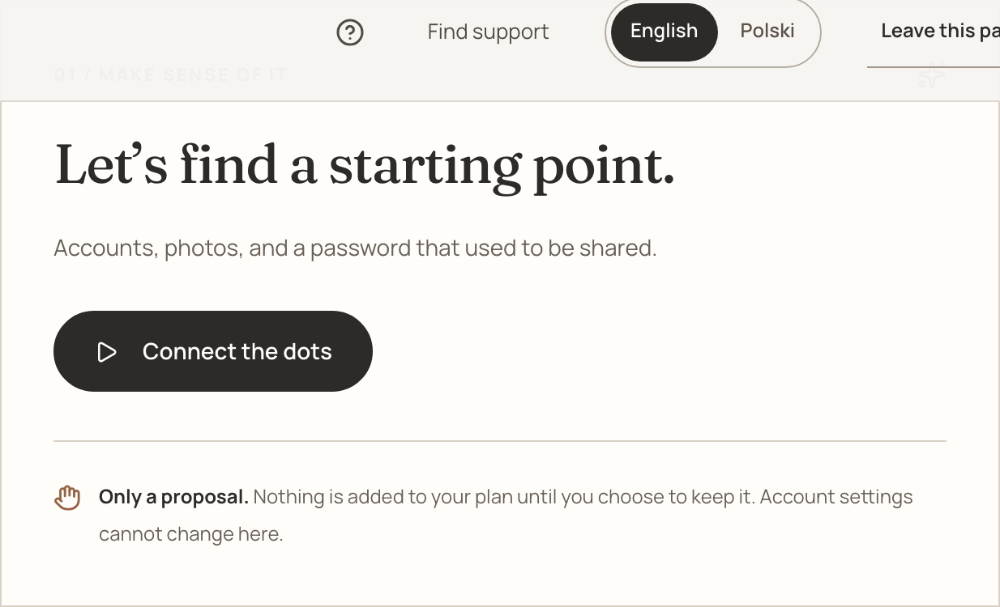
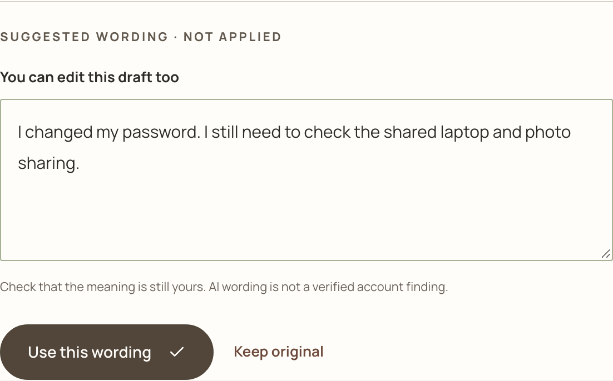
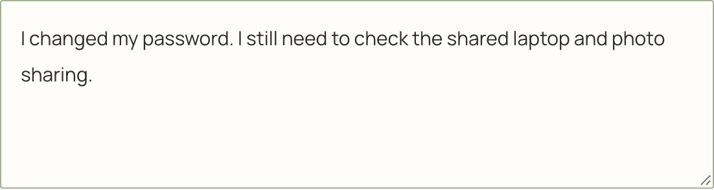
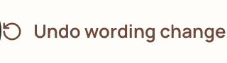
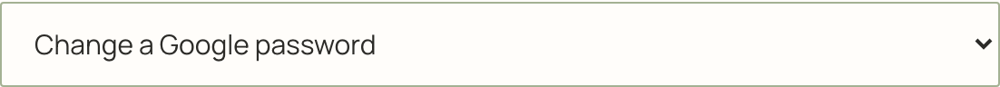
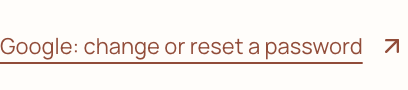
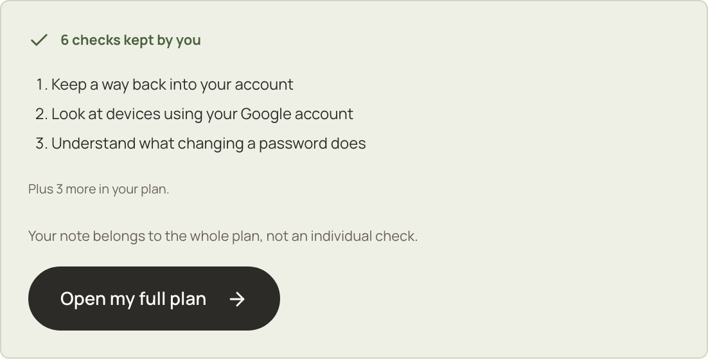

FOR THE DIGITAL TIES THAT LINGER
A breakup ends
a relationship.
Not every
digital connection.
ACCOUNTSPHOTOSLOCATION
UNTANGLE / YOUR NEXT CHAPTER
untangle.A private guide for your next chapter.
untangle / your life, your terms

01 / A REAL PLACE TO START
Meet Maya.
LET’S FIND A STARTING POINT

02 / THE COMPANION SHOWS ITS WORK
Six checks. One place to start.
3 story details6 relevant checksPreparation includedYour review
PROCESS REPLAY · DETERMINISTIC LOCAL RULES · NO ACCOUNT SCAN
03 / AI, WITH A CLEAR JOB
Useful help. Defined boundaries.
01 / YOUR INPUTApproved
context.
Selected topics, or
one note you choose.
→02 / THE MODELA bounded
draft.
Select reviewed guides.
Suggest clearer wording.
→03 / THE APPCheck
the scope.
Supported guide IDs.
Preparation included.
→04 / YOUR SAYAccept.
Edit. Discard.
Nothing applies
without your choice.
03 / PUT THE QUESTION INTO WORDS
Clearer words.
Still her meaning.
ORIGINAL
PREPARED EXAMPLE · NOT A LIVE AI RESPONSE

WORDING ACCEPTED

The uncertainty stays.
“I still need to check…”
04 / UNDERSTAND BEFORE DECIDING
A password is only one thread.
WHAT IF I CHANGE…

Preview only. No account setting changes.05 / A PLAN YOU CONTROL
You decide what stays.
THE STEPS MAYA CHOSE

NOT SURE?Keep the
question.
Reading isn’t reviewing.
06 / RETURN TO WHAT MATTERS
Your progress.
Ready when
you are.
my-plan.untangleEncrypted · on your device
No account to create. No cloud backup.
Come back to the same plan.
✓ Checks, notes and questions restored.


A LITTLE ROOM TO BEGIN AGAIN
Less guesswork.A clearer next step.The choice is yours.
YOUR LIFE. YOUR TERMS.
Try the guided example ↗
untangle-orpin.vercel.app
A private guide for life after a breakup.
MAYA IS FICTIONAL · SCRIPTED DEMONSTRATION